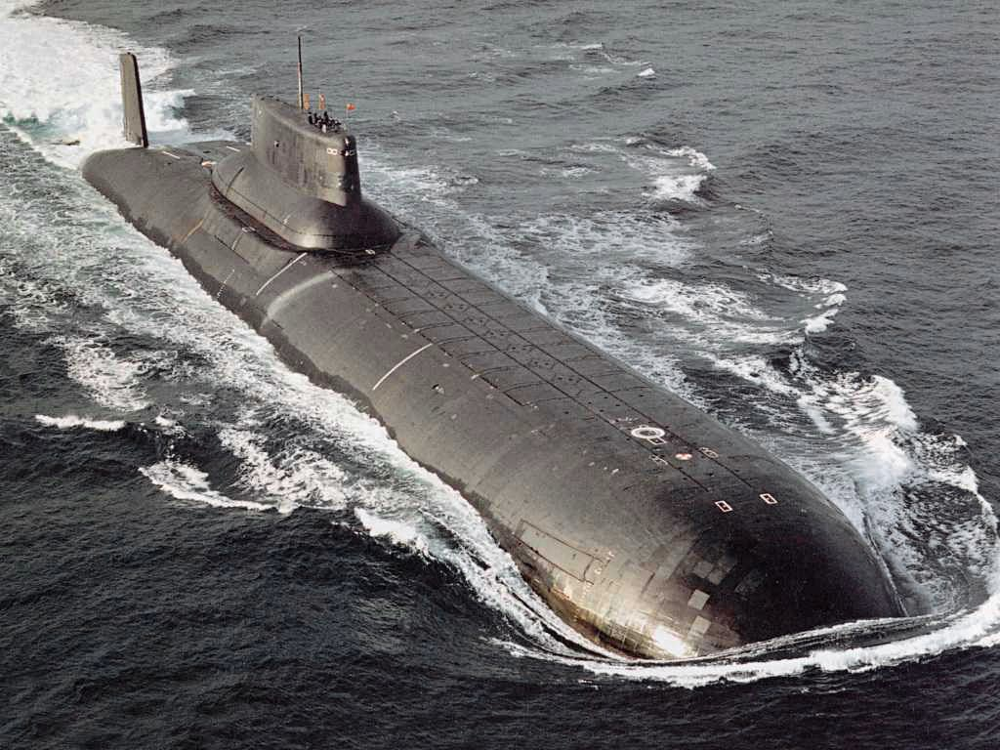
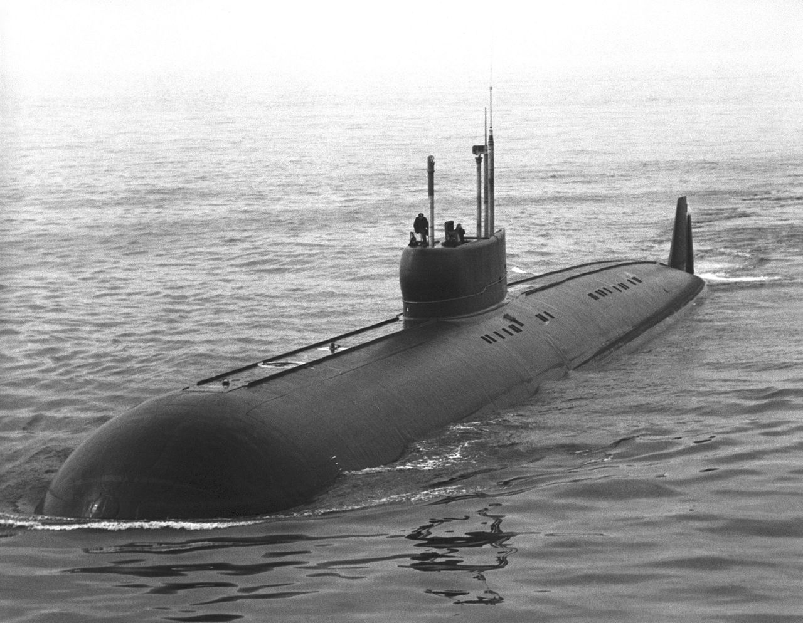
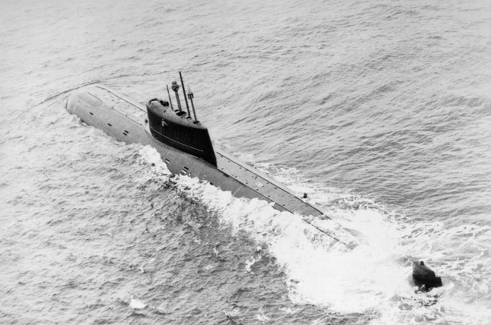
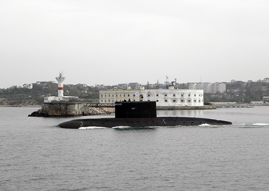

Атомный подводный ракетоносный крейсер стратегического назначения «Дмитрий Донской» – гордость Военно-морского флота РФ, она является самой большой лодкой в мире. Ее полное водоизмещение – 49 800 т, длина – 172 м, ширина корпуса – 23,3 м, высота – 26 м. Подлодка построена по проекту 941 «Акула». Крейсер оснащен ракетным комплексом «Булава» с шестью гиперзвуковыми ядерными боеголовками. Акула была заложена на предприятии «Севмаш» в июне 1976 года, спуск на воду состоялся 29 сентября 1980 года. Всего в серии было 6 кораблей. Из них в рабочем состоянии на данный момент остался только один.
К-222 — советская атомная подводная лодка второго поколения, вооружённая крылатыми ракетами П-70 «Аметист», единственный корабль, построенный по проекту 661 «Анчар». Самая быстрая в мире подводная лодка, достигавшая в подводном положении скорости свыше 82 км/ч (44 узла). За дороговизну постройки лодку прозвали «Золотая рыбка». В 1962 году началось изготовление, на заводе «Севмаш», первых корпусных конструкций из титана, который впервые применялся в мировом подводном кораблестроении. 21 декабря 1968 года лодку спустили на воду. В 1970 году на мерной миле при полной мощности реакторов была достигнута скорость в 44,7 узлов. При этом на скоростях выше 35 узлов из-за турбулентного характера обтекания лодки возникали шумы, доходящие в центральном посту лодки до 100 децибел.
К-278 «Комсомолец» — советская атомная подводная лодка (АПЛ) 3-го поколения, единственная лодка проекта 685 «Плавник». Лодке принадлежит абсолютный рекорд по глубине погружения среди подводных лодок — 1027 метров (4 августа 1985). Тактико-техническое задание на проектирование опытной лодки с повышенной глубиной погружения было выдано ЦКБ-18 в 1966 году. Процесс проектирования закончился только в 1974 году. Проект получил номер 685, шифр «Плавник». В Северодвинске были построены три специальные барокамеры, одна из которых имела диаметр 5 м и длину 20 м, другая, соответственно, 12 и 27, и третья — 15 м и 55 м. Атомная подводная лодка К-278 «Комсомолец» проекта 685 «Плавник» из состава 6-й дивизии 1-й флотилии Северного флота погибла 7 апреля 1989 года при возвращении с третьей боевой службы. В результате возникновения пожара в двух смежных отсеках были разрушены системы цистерн главного балласта, через которые произошло затопление лодки забортной водой.
Подводные лодки проекта 636 «Варшавянка» — тип многоцелевых дизель-электрических подводных лодок (ДЭПЛ).Имеют двойной корпус с 6 водонепроницаемыми отсеками. Подводные лодки этого класса предполагалось строить в больших количествах на экспорт в страны Варшавского договора, поэтому проект и носит такое название. Лодка предназначена для борьбы с подводными и надводными кораблями противника, защиты военно-морских баз, морского побережья и морских коммуникаций. Данные подводные лодки являются самыми бесшумными в мире.
